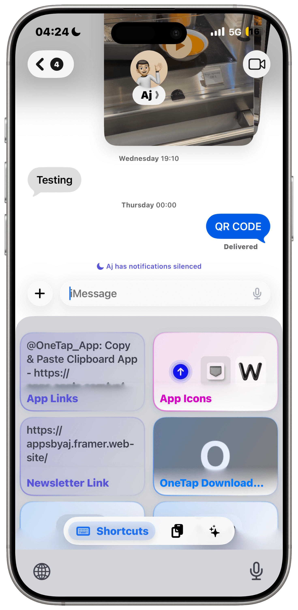
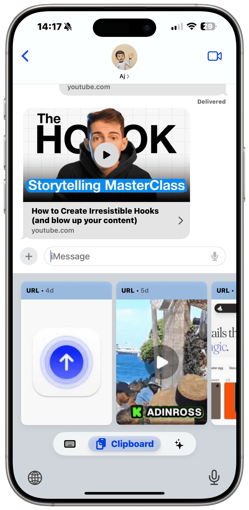
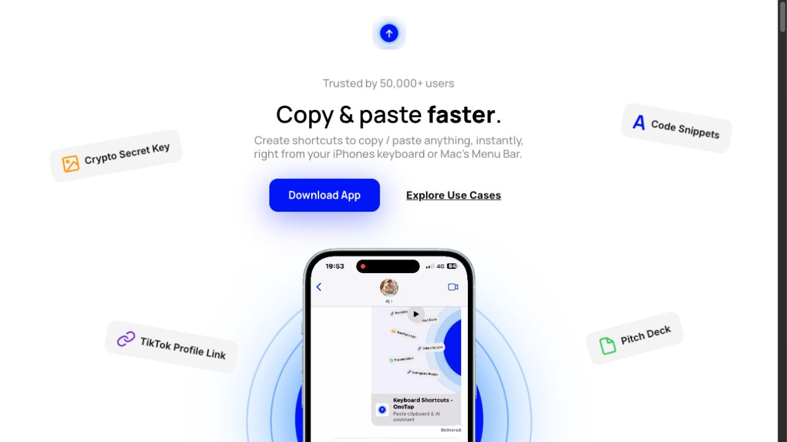
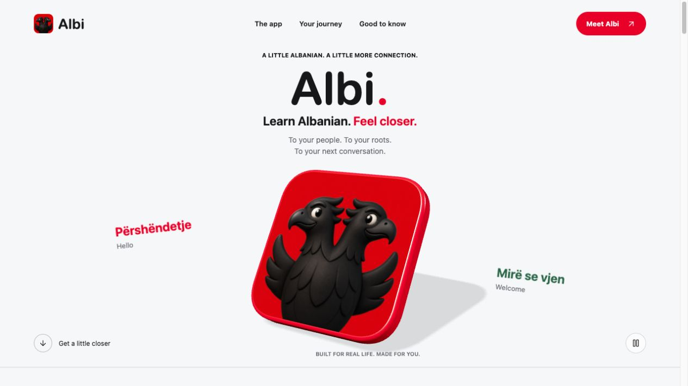
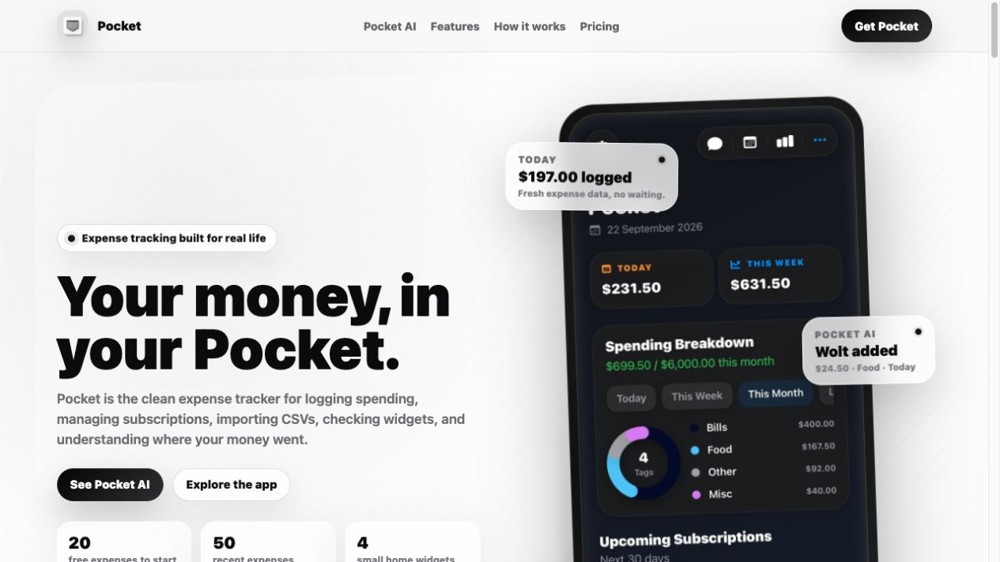
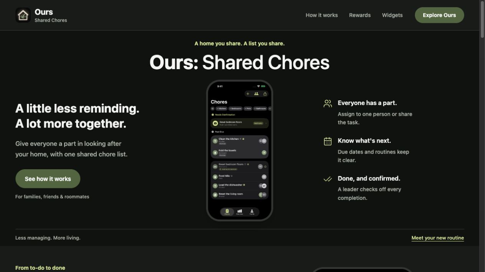
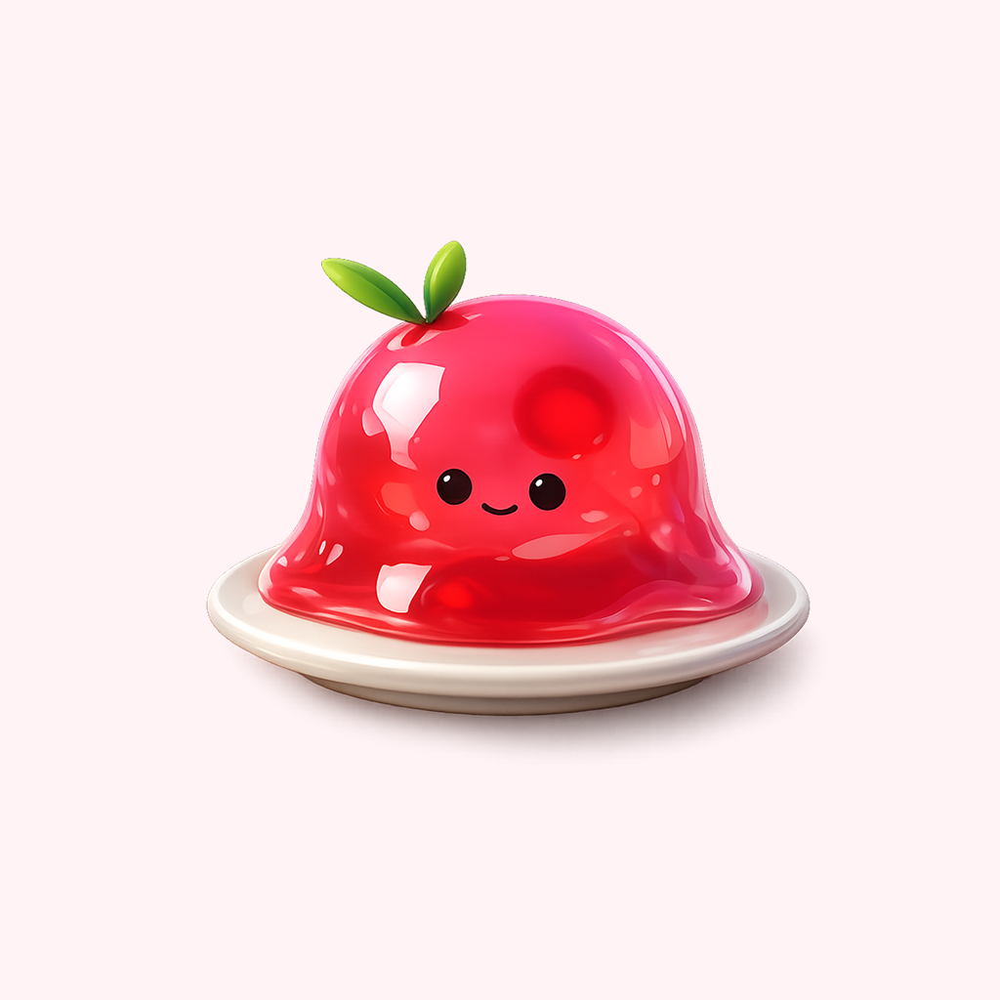

APP STORE OPTIMIZATION01
Nearly 3,000 downloads per month.
No paid ads.
How keyword testing and creator features made OneTap easier to discover in the App Store.
I specialize in designing & building products for both mobile / web.
Three decisions that shaped OneTap:
getting discovered, getting started, and getting paid.
How keyword testing and creator features made OneTap easier to discover in the App Store.
How clearer keyboard setup helped monthly shortcut usage grow from an estimated 5,000 to 50,000.
How a hard paywall increased trial activity, then helped me find a better pricing model.
Additional case studies available on request.
Tell me what you’d like to see.
Save text, links, and images, then paste them directly from the OneTap keyboard. Keep your go-to replies one tap away with custom shortcuts, and use built-in AI to rewrite your text.
Download OneTapFOUNDER · PRODUCT DESIGNER · DEVELOPERYour shortcuts.
Your clipboard.


A clear story. A thoughtful experience.
Websites that bring the product into focus.

A home for a faster workflow. Keyboard shortcuts, clipboard history, and AI, brought into focus.

From a first hello to a real connection. A welcoming introduction to learning Albanian.

Money, made a little clearer. A product story for expenses, budgets, and capturing spending with AI.

A shared home, thoughtfully organized. Chore assignments, approvals, and rewards explained through the product experience.
I’m AJ, a senior product designer at MartianCraft and an independent app founder based in Fier, Albania.
I like the whole process: understanding the problem, finding the simplest interaction, obsessing over the details, and getting it into people’s hands.
At MartianCraft, I design native iPhone and iPad experiences with teams of developers and project managers. In my own products, I connect that design work with SwiftUI, launch, and growth.
Former NCAA basketball captain and 1,000-point scorer. I also played overseas in Albania for two years, averaging 22 points per game. Still bringing the same teamwork and persistence to everything I make.
User interviews · User flows · Usability testing · Onboarding · Pricing experiments
UI/UX · Design systems · Prototyping · Apple HIG · Micro-animations
SwiftUI · Xcode · React · AI-assisted development · Native Apple experiences
App Store optimization · Product growth · Customer feedback · Landing pages
Figma · Framer · Xcode · Sketch · ProtoPie · Principle · Webflow · Spline · Rive · Codex · Claude
Designed native iPhone and iPad apps, managed design systems, built interactive prototypes, and coded designs using SwiftUI, with AI supporting both design and development.
Managed every part of OneTap, from design and development to marketing and growth.
Led a team of 5+ to launch iOS and Android products and grow the community to 1,000+ users.
Founded and grew my own studio to 50K in revenue. Handled all design, project management, and business development.
User research, flows, and early interface concepts for client products.
Cabrini College · BS, Business Management · 2014
Goldey-Beacom College · Associate degree in Business · 2010–2013
Your everyday shortcuts.
One tap away.
Less guessing.
Better gifting.
A clearer picture
of your spending.
A little help for your
green companions.
Make a little room
to breathe.
Find your rhythm.
Plan around your energy.

What’s in the fridge?
That’s what’s for dinner.
minimaList / To-do lists
Grid / Family dashboard
A new website, an app, or a better experience for your users.
Tell me what you’re working on.